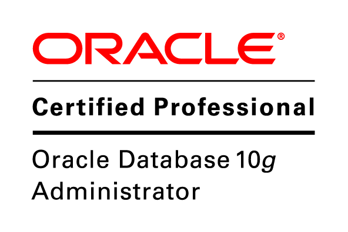

Chukwujekwu Paul Ebubechukwu
Linkdn Email Mobile 

PROFESSIONAL SUMMARY
I have over eight (8) years of experience in Information Technology as Oracle DBA. I am a fully qualified Oracle Professional with OCP (Oracle Certified Professional, Oracle Database SQL Certified Expert, Oracle Certified Specialist - Oracle Database 11g Certified Implementation Specialist) and IT service management (ITIL v3) certification and experience. I have administered and supported many production databases in distributed architecture, High Availability, and Real Application Clustering (RAC) possessing practical and in-depth knowledge and wide experience in protecting and making available organizational data as well as ensuring its integrity. These includes among others- Oracle software installations and configurations, patching and upgrade, Database architecture and design, Performance and tuning, Memory management, Managing database objects, Online partitioning and re-organization of database objects, Backup, Restore and Recovery, Storage management, Tablespace Management, Segment Management, File management, User Management, Security, Capacity planning, Managing Oracle on RAC, ASM Administration, Change management skills and troubleshooting. My Hands-On experience on database administration cuts across different RDBMS and platforms including Oracle(9i,10g,11g and 12c) on AIX, Linux, Solaris and Windows; DB2 on AIX, Linux and Windows; Microsoft SQLSERVER; MySQL on Linux, and finally the NoSQL MongoDB (Document database). I also support Oracle e-Business suite and Oracle Application server services. I possess a lot of technical ability to function as a Unix System administrator and UNIX scripting. I supported all Oracle, DB2, Microsoft SQL Server and MySQL databases in IBM for IBM/Bharti Airtel project in Nigeria, Ghana, Gabon, Sierra Leone, Chad, Niger, Burkina Faso, Congo B and Kenya. I have interest in resolving critical performance issues and have handled different projects in IBM including IBM/Bharti Airtel Datacenter Migration and recently Oracle Enterprise Manager deployment and configuration in Gabon and plug-in all their DB's on the cloud console for online monitoring and administration.
ACADEMIC QUALIFICATION
Professional Training Courses Attended
INTERNATIONAL CERTIFICATIONS
- ORACLE 10g DATABASE ADMINISTRATIONS CERTIFIED ASSOCIATE (OCA)
- ORACLE 10g DATABASE ADMINISTRATIONS CERTIFIED PROFESSIONAL (OCP)
- ORACLE DATABASE SQL CERTIFIED EXPERT
- ORACLE DATABASE 11g CERTIFIED IMPLEMENTATION SPECIALIST
- ITIL ®v3 FOUNDATION
- MONGODB CERTIFIED DBA